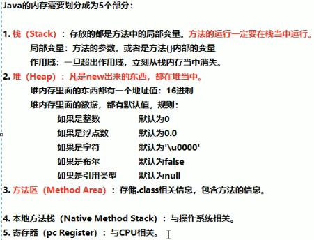
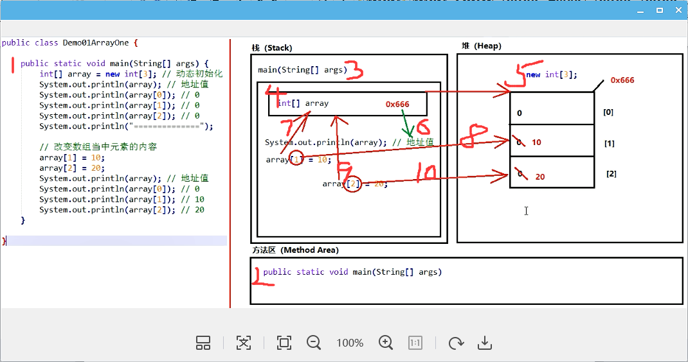

2019-10-17-21:18:33
方法
定义格式:
public static void 方法名称() {
方法体
}
完整格式：
修饰符 返回值类型 方法名称（参数类型 参数名称，...）{
方法体
return 返回值;
}
修饰符：现阶段的固定写法，public. static
返回值类型:也就是方法最终产生的数据结果是什么类型
方法名称:方法的名字，规则和变量一样，小驼峰
参数类型:进入方法的数据是什么类型
参数名称:进入方法的数据对应的变量名称
PS: 参数如果有多个，使用逗号进行分隔
方法体:方法需要做的事情，若干行代码
return:两个作用，第一停止当前方法，第二将后面的返回值还给调用处
返回值:也就是方法执行后最终产生的数据结果
注意: return后面的“返回值”，必须和方法名称前面的“返回值类型”，保持对应。
调用格式:
1.单独调用：方法名称（参数）;
2.打印调用：System.out.println（方法名称（参数））;
3.赋值调用：数据类型 变量名称 = 方法名称（参数）;
注意事项:
1.方法定义的先后顺序无所谓。
2.方法定义必须是挨着的，不能在一个方法的内部定义另外一个方法。
3.方法定义之后，自己不会执行的;如果希望执行，一定要进行方法的调用。
使用方法注意事项
1.方法应该定义在类当中，但是不能在方法当中再定义方法。不能嵌套。
2.方法定义的前后顺序无所谓。
3.方法定义之后不会执行，如果希望执行，一定要调用。有单独调用、打印调用、赋值调用。
4. 如果方法有返回值，那么必须写上"return返回值;”，不能没有。
5. return后面的返回值数据，必须和方法的返回值类型，对应起来。
6.对于一个void没有返回值的方法，不能写return后面的返回值，只能写return自己。
7.对于void方法当中最后一行的return可以省略不写。
8. 一个方法当中可以有多个return语句，但是必须保证同时只有一 个会被执行到，两个return不能连写.
有参数和无参数的区别
1.有参数。小括号当中有内容，当一个方法需要一些数据条件，才能完成任务的时候，就是有参数。
例如两个数字相加，必须知道两个数字是各自多少，才能相加。
2.无参数:小括号当中留空。-一个方法不需要任何数据条件，自己就能独立完成任务，就是无参数。
例如定义一个方法，打印固定10次Helloworld.
方法重载
方法的重载(Overload) :多个方法的名称一样，但是参数列表不一样。
优点：只需要记住唯一个方法名称， 就可以实现类似的多个功能。
方法重载与下列因素相关:
1.参数个数不同
2.参数类型木同，
3.参数的多类型顺序不同
方法重载与下列因素无关:
1.与参数的名称无关
2.与方法的返回值类型无关
数组
概念：数组是一种容器，可以同时存放多个数据值
特点：
1.数组是一种引用数据类型
2.数组当中的多个数据，类型必须统一
3.数组的长度在程序运行期间不可改变
数组的初始化:在内存当中创建-一个数组，并且向其中赋予一些默认值。
两种常见的初始化方式:
1.动态初始化(指定长度)：在创建数组的时候，直接指定数组当中的数据元素个数
2.静态初始化(指定内容)：在创建数组的时候，不指定数据个数多少，而是直接将具体的数据内容进行指定
动态初始化数组的格式:
数据类型[] 数组名称 = new 数据类型[数组长度];
解析含义:
左侧数据类型:也就是数组当中保存的数据，全都是统一 的什么类型
左侧的中括号:代表我是一个数组
左侧数组名称:给数组取一个名字
右侧的new: 代表创建数组的动作
右侧数据类型:必须和左边的数据类型保持一致
右侧中括号的长度:也就是数组当中，到底可以保存多少个数据，是一个int数字
静态初始化
格式：数据类型[] 数组名称 = new 数据类型[] {元素1,元素2...};
省略格式：数据类型[] 数组名称 = {元素1,元素2,...};
使用建议
如果不确定数组当中的具体内容，使用动态初始化，否则，已经确定乐乐具体的内容，用静态初始化
注意：
1.直接打印数组名称得到的是数组对应的内存地址哈希值
2.访问二数组元素的格式：数组名称[索引值]
3.索引值是从0开始，一直到“数组的长度-1”为止
数组长度
格式：数组名称.length
一个方法可以有0、1、多个参数:但是只能有e或者1个返回值，不能有多个返回值。
如果希望一个方法当中产生了多个结果数据进行返回，怎么办?
解决方案：使用一个数组作为返回值类型即可。
任何数据类型都能作为方法的参数类型，或者返回值类型。
数组作为方法的参数，传递进去的其实是数组的地址值。
数组作为方法的返回值，返回的其实也是数组的地址值。
Java内存划分

最开始学Python学到面向对象就转学Java，前面学的比较快，但是到面向对象就开始变难了，学的有点揪心，难受啊